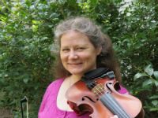

About Me
My name is Claudia Rowen, and I am a Suzuki Violin Teacher, certified through book 4. I have taught violin for almost 20 years. I have also been a Suzuki student and parent. I taught at Concordia High School for several years, and got interested in composing and arranging. My tune Rowen's Choice, was winner of the American Viola Society's Best Viola Tune at the Eleventh Annual Nebraska American String Teachers Association Fiddle Tune Composition Contest.
I took violin lessons from 5th grade through my 2nd year of college. I did about 2 years of music studies in college but my degree is in math.
I studied with:
- Betty Johnson (violin)
- Young Nam Kim (violin)
- Bill Hinkley (fiddle)
- Pam Meisel (fiddle)
I play with several groups:
If you want to see me play, you can check me out on You Tube. My daughter plays very well. Though he lacked the same enthousiasm, my son did well too, but he no longer plays.